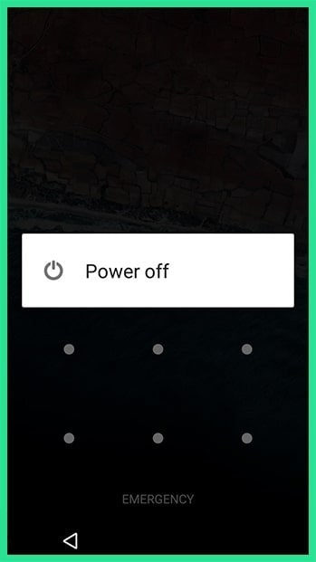
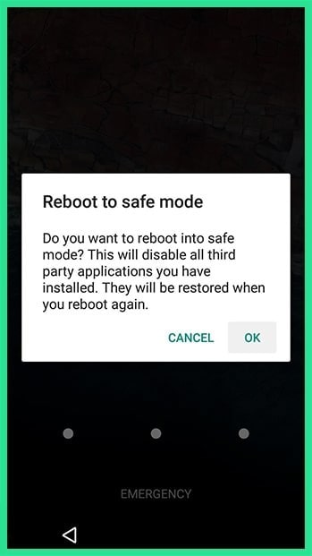

If the lock screen you're trying to bypass is a third-party app rather than the stock lock screen, booting into safe mode is the easiest way to get around it. For most phones, you can boot into safe mode by bringing up the power menu from the lock screen, then long-pressing the "Power off" option. From here, choose "OK" when asked if you'd like to boot into safe mode, and when the process finishes, your third-party lock screen app will be temporarily disabled.
 
From here, simply clear data on the third-party lock screen app or uninstall it, then reboot your phone to get back out of safe mode. When you get back up, the troublesome lock screen app should be gone.